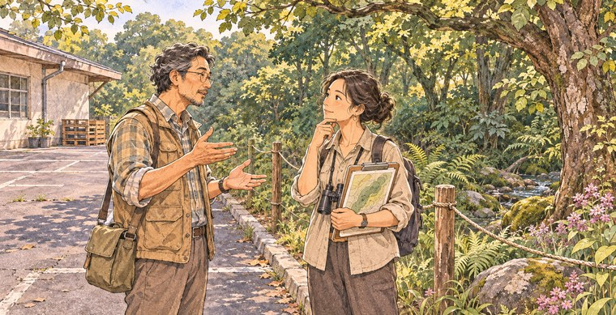

SUS-27 · 虛構的社區土地信託 · 15–20分鐘 · 生態不可逆性 · 恢復所需時間 · 保留選擇
日後復修，現在會失去甚麼？

復修是恢復的起點，不能讓一切回到從前
《生物多樣性公約》目標2的指引區分有效開展復修工作與生態系統已完成恢復，並提醒不可用復修的可能性為進一步破壞辯護。生物多樣性和生態系統服務政府間科學政策平台（IPBES）同樣指出，受損生態系統的恢復需時甚久，亦有其局限。
生態復修學會（Society for Ecological Restoration）的2026年標準採用參照狀態、可量度的特徵和有明確時限的目標。一項2012年的濕地統合分析發現，不同功能的恢復進程各異；研究並不能預測本個案林地的恢復情況。聯合國糧食及農業組織（FAO）在2026年討論監測時，也區分正在復修的土地與已完全恢復的土地。下文有關場地的發現均屬虛構。
課堂決定
虛構的課堂情境。 一個社區土地信託可在兩個為期兩年的露天市集方案中擇一批出使用許可。A 使用一幅已鋪面、曾受擾動的地塊，設置可拆卸攤檔，無須挖掘。B 使用一片成熟生境，須清除木本植被並重新平整地面，以設置較大的市集。兩個方案都可為區內提供實用的交易空間，但只有一支營運團隊，不能合併推行。
在本練習中，土地權利、所需許可、受保護物種、保護區、安全和強制保育責任均已核查。兩個方案都沒有以放寬禁制或犧牲法律保障作為交換條件。工程和使用許可均未作出承諾。可以考慮 B，並不表示生態損失已被認定為可以接受。信託現有的服務和生境護理責任仍有資金支持；額外收入只用於酌情改善，並非用來避免無力償債。
獨立評估顯示，A 的安裝和拆卸工程不會改變已鋪面地塊的現況，也不會損害該片生境。B 已備妥資金，計劃在第2年結束後拆除市集，並在清理過的範圍復修原生生境。倡議者形容這種土地用途是「臨時」的。受託人尚未看到針對這項承諾的生態評估。
按報價，兩年許可期內，A 和 B 的現金淨貢獻分別為80,000港元和160,000港元。兩者採用相同的現金計算基礎，已扣除所有有差異的項目成本、拆卸費用，以及後續護理和監測所需的專用資金。個案假設長期資金充足，對土地亦有足夠的控制權；這項決定並不涉及保養費用無着落的問題。這些數字沒有為生境損失估值，也不能反映全部社會效益。
| 方案 | 場地及改動 | 兩年淨貢獻 |
|---|
| A · 較小的市集 | 在現有已鋪面地塊設置可拆卸攤檔；保留生境 | HK$80,000 |
| B · 較大的市集 | 現在清除生境；第2年結束後拆除市集並開始復修 | HK$160,000 |
你的決定你會暫時選擇 A 還是 B？你需要甚麼證據，才會認為 B 承諾的復修能令生境改作市集的影響逆轉？
第二輪 · 多了一項資料
個案設定的場地生態學家指出，植被覆蓋不等於生境功能。B 已有資金支持的復修方法，可信地足以啟動恢復過程；但據估計，要形成相若的木本植被結構，所需時間為 復修開始後30–50年，而非兩年。這個範圍是針對本場地的教學假設，並非通用的恢復速度，也不是保證。
現有生境內，成熟樹木的樹洞構成一個連續網絡，供當地的野生動物群落使用。清除植被會令這項功能即時消失。即使樹冠結構有所改善，生態學家也無法有把握地承諾，栽種可以重建同樣的樹洞網絡，並讓動物像以往一樣使用。練習中沒有經評估的替代生境，也沒有經驗證的人工樹洞配套方案。任何涉及受保護物種的限制均未獲豁免；這是在個案所設定的合法選項之內，對生境功能作出的評估。
B 在第2年結束時才開始復修。因此，即使只計估算的結構恢復時間，也要等到 從今天起約32–52年後。保養資金和監測不能消除這段空檔，也不能保證已失去的功能會恢復。市集構築物可以拆除，對生態造成的影響卻未必容易逆轉。
A 仍可選擇，淨貢獻為80,000港元，並可完整保留現有生境。市集可在第2年結束後停辦，而無須重建該片生境，讓信託日後在掌握更多證據時重新考慮土地用途。這保留了選擇，並不保證日後有利潤，也不能確保生境免受所有自然擾動。個案沒有提供樹洞功能損失的可靠貨幣估值或概率。
你的決定你會維持還是改變原來的建議？請說明你會放棄或爭取甚麼財務收益、接受或避免甚麼生態損失和多長的恢復期，以及你會如何保留選擇，而不斷言復修必定成功或毫無價值。
附帶條件回答開場問題
在看到生態評估之前，已知 B 多帶來80,000港元現金淨收益，亦有資金支持復修計劃。這足以成為考慮 B 的理由，但「臨時」不能只指許可期。應問：哪些生境特徵會恢復？需時多久？有甚麼證據支持預計的恢復進程？哪些特徵無法重建？監測會檢驗哪些成效？如果信託認為在這些問題未有答案前，應優先保持生境完整，暫時選 A 是合理的。
備妥資金可消除一項重要的推行顧慮，卻不能令生態即時恢復。獲得法律許可，也不能代替信託在環境價值上的判斷。兩個方案都不能僅因攤檔可以拆卸，就被稱為可逆。
分清不同的時間尺度和功能
B 的兩年營運期與估計30–50年的恢復期，是兩個不同的時間尺度。第2年結束後才開始復修，即要等到 從今天起約32–52年後 才會形成相若的木本植被結構，前提是恢復進程符合估算。樹洞功能能否恢復則是另一個不確定因素。外觀看似恢復，或栽種面積相同，都不足以證明這項功能已經恢復。
即使最終完全恢復，也不能補回這段期間未能提供的生境功能。監測或可發現復修未達預期，並為後續行動提供依據，卻不能追溯補回那些年失去的功能。評估並不表示所有復修都會失敗：在已受破壞的地方，局部恢復和改善仍可有價值。
有理據的建議及其代價
建議選擇 A ：在本個案可取得80,000港元收入，同時避免 B 所造成、無法有把握逆轉的即時損失。機會成本是 B 額外帶來的 HK$80,000 淨貢獻，而非全數160,000港元。這項建議把維持現有生境功能和保留日後選擇，置於可酌情使用的額外收入之上；它並非經計算得出的普遍最優福利方案。
若建議選 B，就必須明確接受生境功能長期中斷，以及功能能否恢復仍不確定。不能聲稱項目「不會造成持久損失」，也不能把已有資金支持的栽種承諾視為等值補償。受託人須提出站得住腳的理由，解釋為何接受這些仍然存在的損失；個案沒有提供足以解決這個問題的量化估值。生態評估讓避免損失的理由更充分，卻沒有令放棄的收入消失。
保留選擇，量度成效
若選 A，應訂明市集可使用的已鋪面範圍、可拆卸的設施、生境不得佔用的要求、護理責任，以及日後作任何改動前須進行檢討。日後有新證據時再作評估，但不要承諾會批准日後可能破壞生境的項目。保留選擇，是保留日後作決定的能力，並非無須付出代價就可取得這種彈性。
對任何正在復修的受損場地，應訂明參照狀態、可量度的結構和功能、負責管理的人員、檢討日期，以及有資金支持、可因應情況調整的措施。資金保障和生態證據須分開看待。若選 B，應如實披露過渡期的損失和不確定性；監測不能取代最初就應否造成損失所作的決定。
教師說明
在公布生態評估之前先作暫定投票。請學生分清許可期、拆卸構築物、復修工作、結構恢復和功能是否持續。要求學生同時交代80,000港元的額外現金收益和32–52年的時間尺度；兩者都不是完整的環境估值。
本個案有別於 SUS-15，重點不是栽種數量，也不是哪個佈局最能連接現有生境，而是新增的損失能否逆轉，以及保留選擇有何價值。場地資料、許可、現金金額、生態功能和所需時間均屬虛構。濕地研究支持審慎外推恢復情況，並不支持虛構林地的估算。不要據此推斷有法律豁免，或認為所有復修項目都無效。
第二輪
個案設定的場地生態學家指出，植被覆蓋不等於生境功能。B 已有資金支持的復修方法，可信地足以啟動恢復過程；但據估計，要形成相若的木本植被結構，所需時間為 復修開始後30–50年，而非兩年。這個範圍是針對本場地的教學假設，並非通用的恢復速度，也不是保證。
現有生境內，成熟樹木的樹洞構成一個連續網絡，供當地的野生動物群落使用。清除植被會令這項功能即時消失。即使樹冠結構有所改善，生態學家也無法有把握地承諾，栽種可以重建同樣的樹洞網絡，並讓動物像以往一樣使用。練習中沒有經評估的替代生境，也沒有經驗證的人工樹洞配套方案。任何涉及受保護物種的限制均未獲豁免；這是在個案所設定的合法選項之內，對生境功能作出的評估。
B 在第2年結束時才開始復修。因此，即使只計估算的結構恢復時間，也要等到 從今天起約32–52年後。保養資金和監測不能消除這段空檔，也不能保證已失去的功能會恢復。市集構築物可以拆除，對生態造成的影響卻未必容易逆轉。
A 仍可選擇，淨貢獻為80,000港元，並可完整保留現有生境。市集可在第2年結束後停辦，而無須重建該片生境，讓信託日後在掌握更多證據時重新考慮土地用途。這保留了選擇，並不保證日後有利潤，也不能確保生境免受所有自然擾動。個案沒有提供樹洞功能損失的可靠貨幣估值或概率。
你的決定你會維持還是改變原來的建議？請說明你會放棄或爭取甚麼財務收益、接受或避免甚麼生態損失和多長的恢復期，以及你會如何保留選擇，而不斷言復修必定成功或毫無價值。